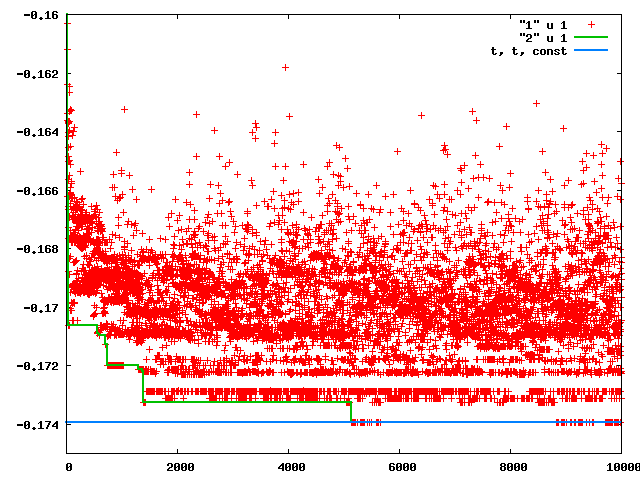
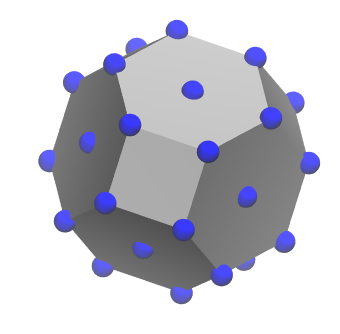
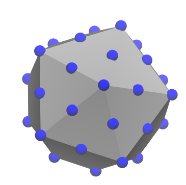

Minima hopping is an effecient global minimization method. It is implemented in cp2k code. I have tested it on LJ38 clusters and found it performed very well. It is easy to using all the force methods in cp2k, and also easy to using multiple cores and easy to restart.
I copied and modified the input file in cp2k test examples.
&GLOBAL
PROJECT_NAME LJ38_minhop_1
PROGRAM_NAME SWARM
RUN_TYPE NONE
SEED 42
&END GLOBAL
&SWARM
BEHAVIOR GLOBAL_OPT
NUMBER_OF_WORKERS 11
MAX_ITER 50000
&GLOBAL_OPT
#E_TARGET -0.028421532
#E_TARGET -0.397492331
E_TARGET -0.173928427
METHOD MINIMA_HOPPING
&HISTORY
ENERGY_PRECISION 1.0e-5
FINGERPRINT_PRECISION 1.0e-2
&END HISTORY
&END GLOBAL_OPT
#REPLAY_COMMUNICATION_LOG LJ38_minhop_1_old.comlog
&END SWARM
&MOTION
&PRINT ! IO is expensive, turning everything off
&RESTART OFF
&END RESTART
&RESTART_HISTORY OFF
&END RESTART_HISTORY
&TRAJECTORY
!ADD_LAST NUMERIC
&EACH
GEO_OPT -1
MD -1
&END EACH
&END TRAJECTORY
&END PRINT
&MD
ENSEMBLE NVE
STEPS 1000
TIMESTEP 0.5
&VELOCITY_SOFTENING
STEPS 20
ALPHA 1.0
DELTA 0.01
&END VELOCITY_SOFTENING
&PRINT
&ENERGY OFF
&END ENERGY
&CENTER_OF_MASS OFF
&END CENTER_OF_MASS
&COEFFICIENTS OFF
&END COEFFICIENTS
&PROGRAM_RUN_INFO OFF
&END PROGRAM_RUN_INFO
&ROTATIONAL_INFO OFF
&END ROTATIONAL_INFO
&SHELL_ENERGY OFF
&END SHELL_ENERGY
&TEMP_KIND OFF
&END TEMP_KIND
&TEMP_SHELL_KIND OFF
&END TEMP_SHELL_KIND
FORCE_LAST .TRUE.
&END PRINT
&END MD
&GEO_OPT
OPTIMIZER CG
MAX_ITER 300
&CG
MAX_STEEP_STEPS 3
&LINE_SEARCH
&GOLD
INITIAL_STEP 1.0e-2
&END GOLD
&END LINE_SEARCH
&END CG
&BFGS
TRUST_RADIUS [angstrom] 0.1
USE_RAT_FUN_OPT ! otherwise LJ particle sth. get too close.
&RESTART OFF
&END RESTART
&END BFGS
&PRINT
&PROGRAM_RUN_INFO OFF
&END PROGRAM_RUN_INFO
&END PRINT
&END GEO_OPT
&END MOTION
&FORCE_EVAL
&PRINT
&DISTRIBUTION OFF
&END DISTRIBUTION
&DISTRIBUTION1D OFF
&END DISTRIBUTION1D
&DISTRIBUTION2D OFF
&END DISTRIBUTION2D
&FORCES OFF
&END FORCES
&GRID_INFORMATION OFF
&END GRID_INFORMATION
&PROGRAM_RUN_INFO OFF
&END PROGRAM_RUN_INFO
&STRESS_TENSOR OFF
&END STRESS_TENSOR
&TOTAL_NUMBERS OFF
&END TOTAL_NUMBERS
&END PRINT
METHOD FIST
&MM
&FORCEFIELD
&SPLINE
R0_NB 1.0E-10 ! solely MAX_SPLINE shall control spline range
EMAX_SPLINE [hartree] 1000
EMAX_ACCURACY [hartree] 1000 ! yields r_min = 0.66 bohr
EPS_SPLINE [hartree] 1.0E-10 ! yields 1698 spline points
&END SPLINE
&NONBONDED
&LENNARD-JONES
atoms X X
EPSILON [hartree] 0.001
SIGMA 1.0
RCUT 25.0
&END LENNARD-JONES
&END NONBONDED
&CHARGE
ATOM X
CHARGE 0.0
&END CHARGE
&END FORCEFIELD
&NEIGHBOR_LISTS
GEO_CHECK OFF
&END NEIGHBOR_LISTS
&POISSON
&EWALD
EWALD_TYPE none
&END EWALD
&END POISSON
&PRINT
&DERIVATIVES OFF
&END DERIVATIVES
&DIPOLE OFF
&END DIPOLE
&EWALD_INFO OFF
&END EWALD_INFO
&FF_INFO OFF
&END FF_INFO
&FF_PARAMETER_FILE OFF
&END FF_PARAMETER_FILE
&ITER_INFO OFF
&END ITER_INFO
&NEIGHBOR_LISTS OFF
&END NEIGHBOR_LISTS
&PROGRAM_BANNER OFF
&END PROGRAM_BANNER
&PROGRAM_RUN_INFO OFF
&END PROGRAM_RUN_INFO
&SUBCELL OFF
&END SUBCELL
&END PRINT
&END MM
&SUBSYS
&CELL
ABC [angstrom] 50.0 50.0 50.0
!PERIODIC NONE
&END CELL
&COORD
X 19.9299001112 19.950169551 19.8322640143
X 19.9729085751 19.9093309127 21.9394380813
X 19.8941562054 19.8941284049 24.0569837799
X 19.9695852658 20.05096174 26.0067040618
X 19.8674946895 21.8602000252 20.1915984374
X 19.8880139948 21.9536267685 22.0485106395
X 20.0129749414 21.8625405898 23.9870979205
X 20.082926774 22.0788992596 25.8572713695
X 20.1546207624 24.0025491948 19.8547537874
X 19.8031230442 24.0436048709 21.9106314379
X 19.9463916441 24.1839491879 23.8834113495
X 19.8704727285 24.16644628 25.8358148517
X 19.9838019218 25.9057999191 20.0560911995
X 20.1292145367 26.1581490664 22.0943715423
X 19.9781889658 26.083599068 24.0336864536
X 19.8883959013 25.8200957812 26.0366653688
X 21.8201260724 20.1242010293 19.8205288067
X 21.8505910349 19.9947362491 21.8404146774
X 21.8550273956 19.9254871471 24.1073006016
X 21.8959492318 19.9013788938 25.8664416645
X 22.1302099673 21.9272265398 19.9252007031
X 21.9102230055 22.1149858217 21.9240625018
X 22.199987559 22.1591700852 23.8318003313
X 21.9003367373 22.1293676776 25.9205476882
X 21.88906222 23.8016798271 19.8361992897
X 21.8178764403 23.959817666 22.139335581
X 22.0455507021 24.1606968111 23.9829670521
X 21.9423108666 23.979777561 26.0915224226
X 21.8720398156 26.0920668527 19.9883875322
X 22.1930798224 25.9151320315 22.018793157
X 21.8088496409 26.0005309843 23.9521645719
X 22.1819324474 26.1518318479 25.9325533822
X 23.9252010921 20.0182542645 19.8463786663
X 24.0939325405 20.1666761084 22.0954054271
X 23.9434446885 20.0072638668 24.1136432412
X 24.1239486847 20.1448454527 25.9584634081
X 23.8406670306 22.148328277 20.1143768668
X 24.1302214528 21.9474940966 22.0937869524
&END COORD
&TOPOLOGY
CONNECTIVITY OFF
&END TOPOLOGY
&KIND X
ELEMENT H
MASS 1.0
&END KIND
&END SUBSYS
&END FORCE_EVAL
Here number of processors has to be NUMBER_OF_WORKERS * n + 1, n is any interger number. So here is the running script for killdevil.
1 2 3 4 5 6 7 8 | #!/bin/bash -l
#BSUB -n 12
#BSUB -e err.%J
#BSUB -o out.%J
module load cp2k
/usr/mpi/intel/mvapich2-1.7/bin/mpiexec -np 12 cp2k.popt -i LJ38_minhop_1.inp -o LJ38_minhop_1.out
|
If would like to restart a calculation I need to mv the comlog file, and uncomment REPLAY_COMMUNICATION_LOG command in the input file.
mv LJ38_minhop_1.comlog LJ38_minhop_1_old.comlog
Here is the scripts for plotting the local minimum and global minimum versus timesteps.
make_figure.sh
1 2 3 4 | #!/bin/bash -l
module load gnuplot
bash grep_energys.sh
gnuplot plot.gplt
|
grep_energys.sh
grep " GLBOPT| Reported potential energy" LJ38_minhop_1.out | awk '{print $6 }' > 1
grep "GLBOPT| Lowest reported potential energy" LJ38_minhop_1.out | awk '{print $7 }' > 2
plot.gplt
#set terminal postscript
#set output "test.ps"
set terminal png
set output "test.png"
set yrange [-0.175:-0.160]
set trange [0:50000]
set xrange [0:10000]
set parametric
const=-0.173928427
p "1" u 1, "2" u 1 w l lw 2, t, const w l lw 2
And I post the output plot here. 
To get the minimal energy structures out, I wrote a script. The script will output the structures with the order from low energy to high energy.
f = file("LJ38_minhop_1.comlog")
read = False
Epot_positions = []
Epot_position = []
while True:
line = f.readline()
if len(line) == 0:
break
if "Epot" in line:
read = True
line = f.readline()
line = f.readline()
words = line.split()
Epot = float(words[1])
Epot_position.append(Epot)
if "size" in line and read == True:
read = False
words = line.split()
natoms = int(words[1])/3
positions = []
for i in range(natoms):
line = f.readline()
x = float(line) / 1.889725989
line = f.readline()
y = float(line) / 1.889725989
line = f.readline()
z = float(line) / 1.889725989
position = [x,y,z]
positions.append(position)
Epot_position.append(positions)
Epot_positions.append(Epot_position)
Epot_position = []
#print natoms
#print "Epot: " , Epot
#for i in range(natoms):
# print "X", positions[i][0], positions[i][1], positions[i][2]
Epot_positions_sorted = sorted(Epot_positions , key = lambda Epot_position: Epot_position[0])
Epot = Epot_positions_sorted[0][0] - 1
for j in range(len(Epot_positions_sorted)):
if Epot_positions_sorted[j][0] - Epot > 1e-5:
Epot = Epot_positions_sorted[j][0]
print natoms
print "Epot: " , Epot_positions_sorted[j][0]
for i in range(natoms):
positions = Epot_positions_sorted[j][1]
print "X",positions[i][0], positions[i][1], positions[i][2]
The two lowest energy structure are here with the energy of -0.173928415115, and -0.173252366954. Here are the structures of them.
 
Comments
comments powered by Disqus